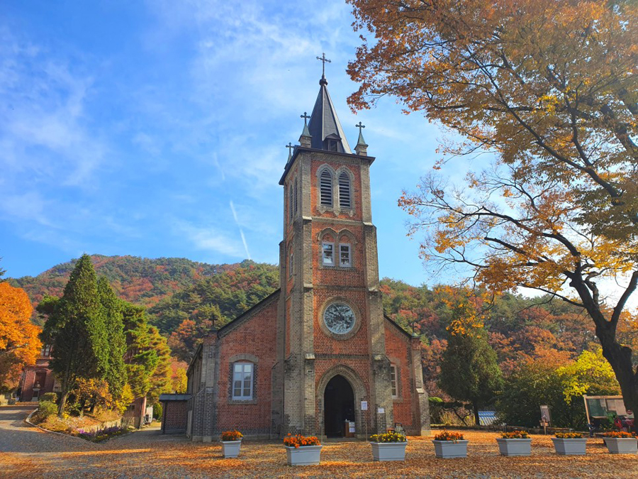
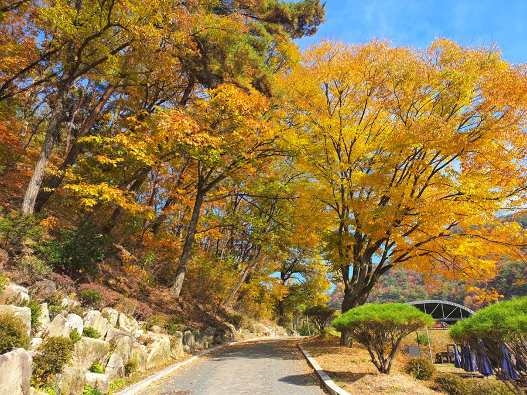
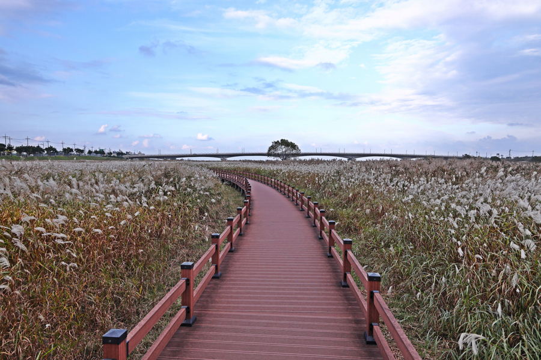
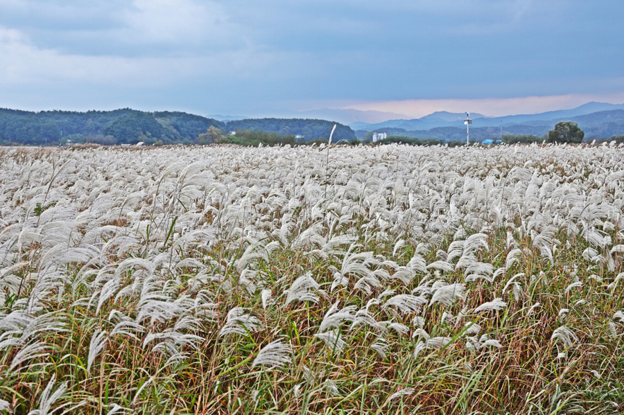

다채로운 색으로 풍덩! 가을철 추천 여행지
무더위가 지나고 어디론가 떠나고 싶은 시간,
계절의 변화가 산과 바다 다채로운 색으로 물들여 가을이 왔음을 더욱 실감나게 한다.
강원도의 가을을 흠뻑 느낄 수 있는 여행지 추천!
<참고 강원네이처로드 매거진>
가을철 추천 명소 여행 매거진 - 강원네이처로드


1. 횡성 풍수원 성당 (가을이 되면 내리는 낙엽비가 가득)
강원 횡성군 서원면 경강로유현1길 30
1907년에 지어진 풍수원성당은 우리나라에서는 네 번째이자 강원도 최초의 성당으로, 한국 신부가 지은 최초의 성당이다.
붉은 벽돌로 지은 성당의 아름다운 건축미가 돋보이며, 가을철 노란 은행잎과 어우러져 고즈넉하고 정결한 분위기에 평안을 맛볼 수 있다.


2. 양양 남대천생태관찰로 (가을 정취 가득한 억새 숲 산책)
강원 양양군 양양읍 조산리 93-1
바다와 강이 만나는 곳에 있는 남대천은 재두루미, 흰목물떼새 등 다양한 멸종 위기 야생동물이 서식하는 장소로,
가을이면 억새가 장관을 이뤄 데크 길을 따라 걸으면 잔잔한 강물과 바람에 출렁이는 억새의 은빛 물결에 마음을 빼앗기게 된다.


3. 영월 붉은 메밀밭 (붉은 메밀이 바람에 흩날리며 붉게 타오르는 듯한 신비함)
강원 영월군 영월읍 삼옥리 301-1
익히 알고 있는 흰 메밀꽃이 아닌 붉은 메밀꽃을 볼 수 있는 곳으로,
10월 초 동강 변을 따라 만개한 붉은 메밀꽃을 볼 수 있어 영월의 가을 명소로 주목받고 있다.